“PLANO 3D Y 2D DE UNA PRESA BASICA”
Para lograr este plano es necesario comprenderlo de como se llego con algunas funciones del AutoCAD por ello describirmos los siguientes pasos del modelo:
PASO 1:
Se empezó entrando a AUTOCAD y activamos la opción “CAMBIO DE ESPACIO DE TRABAJO” (Se encuentra en la izquierda parte inferior)
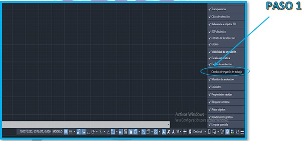
PASO 2:
Luego “3D MODELADO”
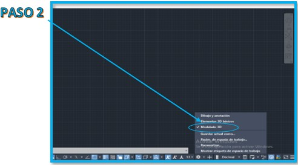
PASO 3:
Se crea layers para cada bloque con la herramienta LAYER PROPERTIES
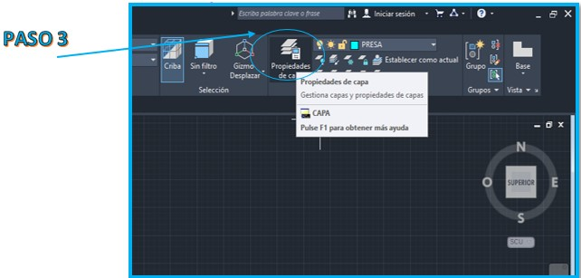
PASO 4:
Creado los layers se coloca los nombres y colores de los bloques para trabajar en orden y saber identificar cada LAYER
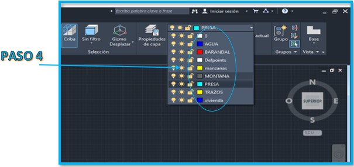
PASO 5:
Se selecciona la opción SE ISOMETRIC para una mejor perspectiva (Esto nos permite cambiar la perspectiva para poder trabajar viendo los ejes Y y X)
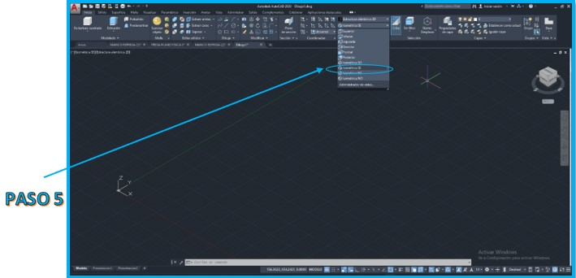
PASO 6:
Se Realiza los trazos con la herramienta POLYLINE (Nos permite realizar la forma de la presa dibujando conectando puntos con algunas medidas longitudinales)
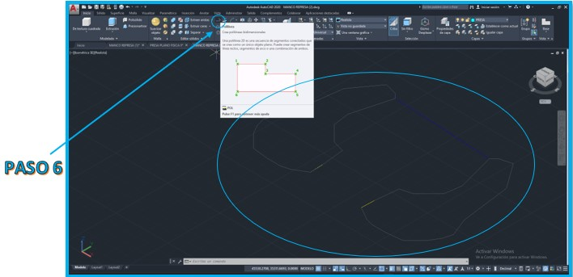
PASO 7:
Luego el trazo del arco con la herramienta ARC arco 3 puntos (Para poder realizar el arco conectamos los puntos de la esquina de la presa y poder realizar una simulación básica)
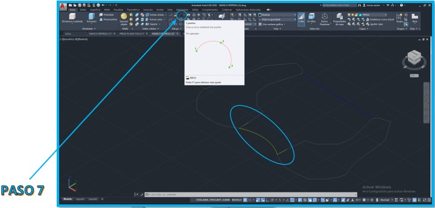
PASO 8:
Una vez realizado el arco se uso la herramienta OFFSET en el arco para formar la represa (Esta herramienta nos permite poder sacar una proyección de la curva de forma paralela)
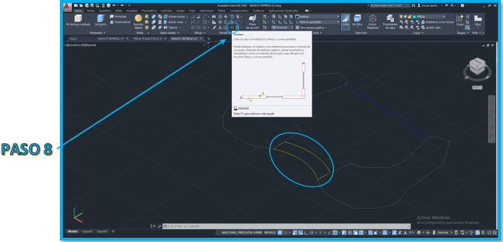
PASO 9:
Una vez obtenido los trazos se usó la herramienta PRESSPULL realizando así la proyecci (Esto nos permite poder levantar las líneas trazadas en 3D, además las capas nos ayudan con los nombres y coleras poder diferenciar la curva de la presa, los cerros de lado que conectan con la misma)
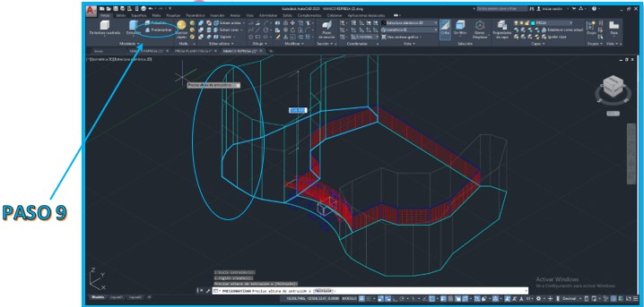
PASO 10:
Por último, se selecciona la herramienta visual styles opción shaded.
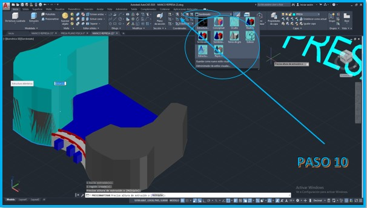
PASO 11:
Resultado final.
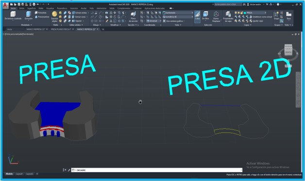
En resumen:
El presente trabajo tiene la breve conclusión de como el tema de elasticidad se ve manifestada en una representación estructural en esta situación ejemplificada de un modelo de Autocad 3D sobre una presa además de que esta guarda una gran relación con el tema de Hidrostática. Graficar la presa nos permitirá poder dar una mejor explicación de como surge estos acontecimientos de elasticidad. El paso detallado manifiesta el arduo trabajo y compresión de ella para poder aprender a profundo este tema y describir las herramientas utilizadas del programa en el campo de la Ingeniería Civil.